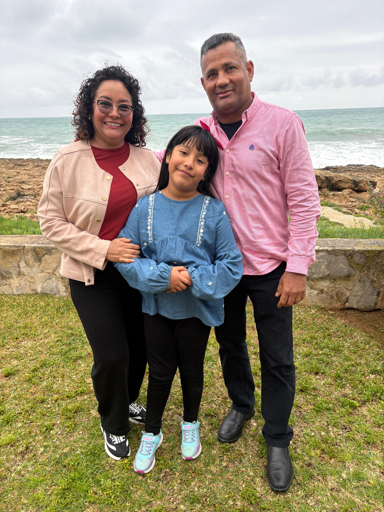
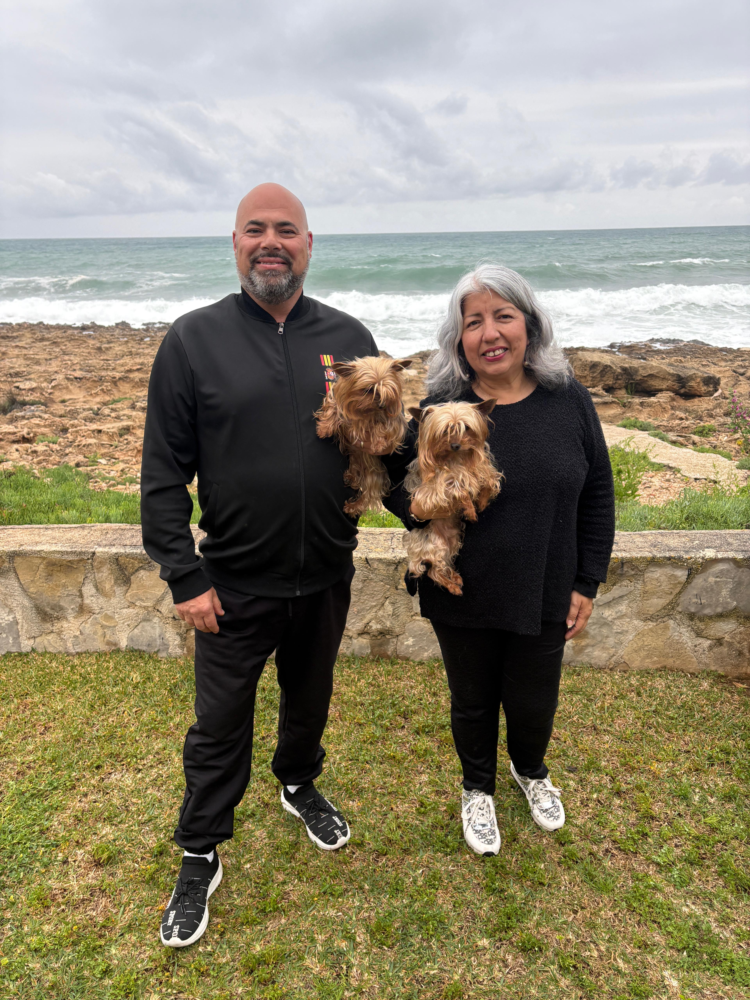
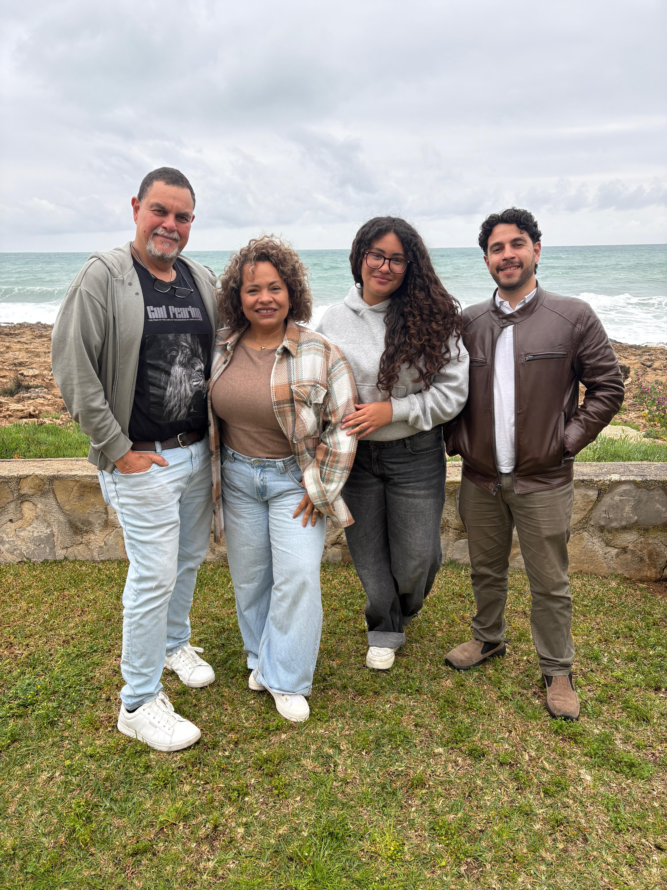
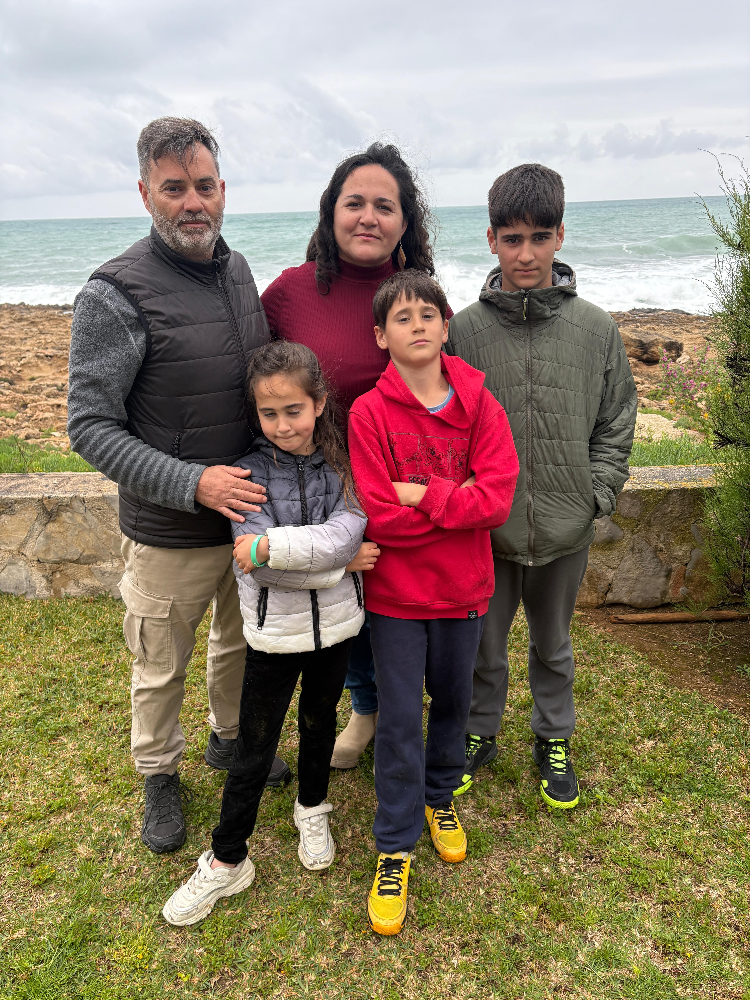

Youth Mental Health
Suicide is the #1 cause of non-natural death among youth ages 15–29 in Spain. Purpose, belonging, and character formation are vital.
Community & Faith-Based Education
Your gift opens doors for families who seek accessible, values-informed education, youth mentorship, and community hubs. Every contribution helps form the next generation of leaders.
Stripe: Chanak TrainUp Education, Inc. issues your receipt. PayPal Giving Fund: PayPal Giving Fund issues its own receipt.
The Need We Address
Suicide is the #1 cause of non-natural death among youth ages 15–29 in Spain. Purpose, belonging, and character formation are vital.
1 in 4 students experiences bullying. We create safe, church-centered learning spaces where every student is valued.
Private values-based education is often financially inaccessible. We deliver accessible, mission-supported community learning hubs for families.
Community Partnerships
We work with local partner communities in Tarragona, Jávea, Vinaròs and Torrevieja.

Torrevieja
Connecting families, community spaces, and educational support around belonging, character formation, and learning opportunity for children and youth.

Jávea
Strengthening community-based learning pathways, building trust with local families, and supporting sustainable youth development.

Vinaròs
Supporting community connection, family engagement, and accessible educational opportunities for youth and adolescents.

Tarragona
Strengthening local partnerships, youth mentoring pathways, and educational participation around children, youth, and families.
Local Outreach & Mentorship
Equipping adolescents and bilingual youth in Pinellas, Hillsborough, and Pasco counties with character development, life skills, and practical workforce readiness.
Age-tailored mentorship cohorts focused on practical decision-making, digital literacy, civic service, and resilience for middle and high school students.
Career exploration, vocational mentoring, resume coaching, and communication skills helping underserved young adults navigate their next academic and professional steps.
Your donation to CHANAK TRAINUP EDUCATION INC is tax-deductible to the fullest extent permitted by law in the United States.
No goods or services were provided in exchange for your donation.
EIN: 36-5154011 · 501(c)(3) Tax-Exempt Public Charity recognized by the IRS.
Stripe: Chanak TrainUp Education, Inc. issues your receipt. PayPal Giving Fund: PayPal Giving Fund issues its own receipt.
Questions about giving or wire transfers? Contact us at info@chanakfoundation.org